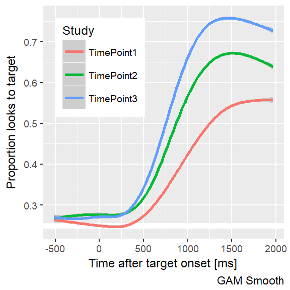
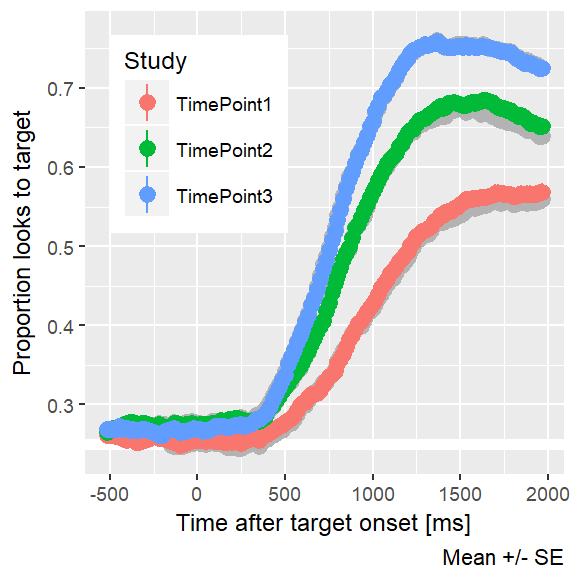
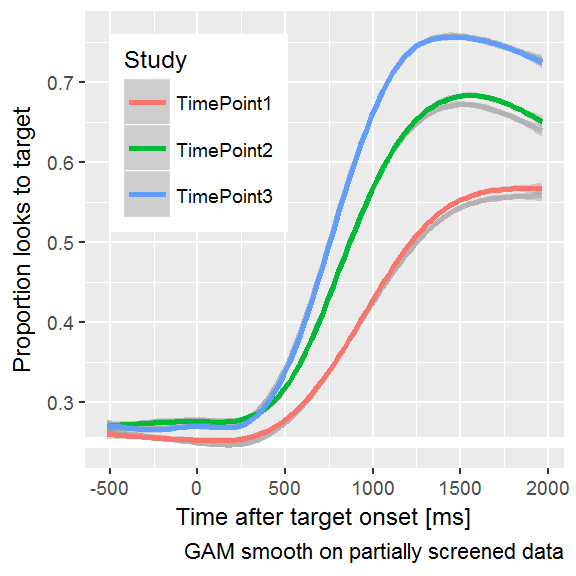

Chapter 9 Prepare and explore the data
First, let’s load in all the data and plot the data from each year.
library(dplyr)
#> Warning: package 'dplyr' was built under R version 3.4.2
library(rlang)
library(littlelisteners)
library(ggplot2)
#' group `data` by some grouping variables (`...`),
#' randomly select `size` of the groups
#' keep just the data from those sampled groups
sample_n_of <- function(data, size, ...) {
dots <- quos(...)
rows <- data_frame(row = seq_len(nrow(data)))
rows[, "group"] <- data %>%
group_by(!!! dots) %>%
group_indices()
subset <- rows %>%
filter(.data$group %in% sample(unique(.data$group), size)) %>%
pull(.data$row)
data[subset, ]
}
create_pairs <- function(xs) {
if (!is.factor(xs)) xs <- ordered(xs)
xs %>%
levels() %>%
rev() %>%
combn(2) %>%
t() %>%
as.data.frame() %>%
set_names("x1", "x2") %>%
mutate(name = paste0(.data$x1, "-", .data$x2)) %>%
mutate_all(as.character) %>%
arrange(x1, desc(x2))
}
compare_pairs <- function(data, levels, values, f = `-`) {
levels <- enquo(levels)
values <- enquo(values)
pairs <- data %>% pull(!! levels) %>% create_pairs()
wide <- tidyr::spread(data, !! levels, !! values)
for (row_i in seq_len(nrow(pairs))) {
pair_i <- pairs[row_i, ]
wide[, pair_i$name] <- f(wide[[pair_i$x1]], wide[[pair_i$x2]])
}
wide %>%
select(-one_of(c(pairs$x1), c(pairs$x2))) %>%
tidyr::gather("pair", "value", one_of(c(pairs$name))) %>%
mutate(pair = factor(.data$pair, levels = pairs$name))
}
tidy_corr <- function(df, ..., .type = c("pearson", "spearman")) {
vars <- quos(...)
select(df, !!! vars) %>%
as.matrix() %>%
Hmisc::rcorr(type = .type) %>%
broom::tidy() %>%
tibble::remove_rownames() %>%
arrange(.data$column1, .data$column2)
}looks1 <- readr::read_csv("./data-raw/rwl_timepoint1_looks.csv.gz")
looks2 <- readr::read_csv("./data-raw/rwl_timepoint2_looks.csv.gz")
looks3 <- readr::read_csv("./data-raw/rwl_timepoint3_looks.csv.gz")
looks <- bind_rows(looks1, looks2, looks3) %>%
filter(Version == "Standard")
resp_def <- create_response_def(
primary = "Target",
others = c("PhonologicalFoil", "SemanticFoil", "Unrelated"),
elsewhere = "tracked",
missing = NA
)
# Keep only frames from -500 to 2000 plus or minus any frames to make the
# number of frames divisible by 3 (for binning)
times_to_keep <- looks %>%
distinct(Time) %>%
trim_to_bin_width(3, time_var = Time, key_time = 0, key_position = 2,
min_time = -500, max_time = 2000) %>%
pull(Time) %>%
range()
raw_data <- looks %>%
filter(between(Time, times_to_keep[1], times_to_keep[2])) %>%
aggregate_looks(resp_def, Study + ResearchID + Time ~ GazeByImageAOI)Make some plots of overall averages.
ggplot(raw_data) +
aes(x = Time, y = Prop, color = Study) +
geom_hline(size = 2, color = "white", yintercept = .25) +
stat_summary() +
labs(x = "Time after target onset [ms]",
y = "Proportion looks to target",
caption = "Mean +/- SE") +
theme_grey(base_size = 9) +
theme(legend.position = c(0.05, 0.95),
legend.justification = c(0, 1))
#> Warning: Removed 22 rows containing non-finite values (stat_summary).
#> No summary function supplied, defaulting to `mean_se()
ggplot(raw_data) +
aes(x = Time, y = Prop, color = Study) +
geom_hline(size = 2, color = "white", yintercept = .25) +
stat_smooth() +
labs(x = "Time after target onset [ms]",
y = "Proportion looks to target",
caption = "GAM Smooth") +
theme_grey(base_size = 9) +
theme(legend.position = c(0.05, 0.95),
legend.justification = c(0, 1))
#> `geom_smooth()` using method = 'gam'
#> Warning: Removed 22 rows containing non-finite values (stat_smooth).
The raw data plainly confirm hypothesis 1:
Children’s accuracy and efficiency of recognizing words will improve each year.
Look at a spaghetti plot…
ggplot(raw_data) +
aes(x = Time, y = Prop, group = ResearchID) +
geom_hline(size = 2, color = "white", yintercept = .25) +
geom_line(alpha = .15) +
facet_grid(~ Study) +
theme_grey(base_size = 9) +
labs(x = "Time after target onset [ms]",
y = "Proportion looks to target",
caption = "Lines: Individual participants") +
theme(legend.position = c(0.05, 0.95),
legend.justification = c(0, 1))
9.1 Data cleaning
We use the following options for data screening.
rules <- list(
screening_window = c(0, 2020),
missing_data_limit = .5,
min_trials = 12
)That is:
- Filter out bad trials. These have at least 50% missing data between 0 to 2020ms.
- Filter out bad blocks. These have fewer than 12 trials.
These are the default conventions four lab on these eyetracking experiments.
# offset to catch frame before and after window
# (to reflect binning boundaries)
screening_times <- looks %>%
distinct(Time) %>%
trim_to_bin_width(3, 0, 2, Time, min_time = rules$screening_window[1],
max_time = rules$screening_window[2]) %>%
pull(Time) %>%
range()
screening_times
#> [1] -16.6546 2015.2100
missing_data_by_trial <- looks %>%
filter(screening_times[1] <= Time, Time <= screening_times[2]) %>%
aggregate_looks(
resp_def,
Study + Version + ResearchID + Basename + TrialNo ~ GazeByImageAOI) %>%
mutate(BadTrial = rules$missing_data_limit <= PropNA)
bad_trial_counts <- missing_data_by_trial %>%
count(Study, ResearchID, Basename, BadTrial) %>%
tidyr::spread(BadTrial, n) %>%
rename(n_bad = `TRUE`, n_good = `FALSE`) %>%
# Replace NAs with 0, in case there were 0 good trials in a block or
# 0 bad trials in a block
mutate(n_bad = coalesce(n_bad, 0L),
n_good = coalesce(n_good, 0L),
trials = n_good + n_bad,
prop_bad = round(n_bad / trials, 2))
blocks_to_drop <- bad_trial_counts %>%
filter(.5 <= prop_bad)
blocks_to_drop
#> # A tibble: 110 x 7
#> Study ResearchID Basename n_good n_bad trials prop_bad
#> <chr> <chr> <chr> <int> <int> <int> <dbl>
#> 1 TimePoint1 013L RWL_Block2_013L32MA1 11 13 24 0.54
#> 2 TimePoint1 023L RWL_Block1_023L29MA1 10 14 24 0.58
#> 3 TimePoint1 027L RWL_Block2_027L38MS2 6 18 24 0.75
#> 4 TimePoint1 033L RWL_Block1_033L35FS2 2 22 24 0.92
#> 5 TimePoint1 033L RWL_Block2_033L35FS2 2 22 24 0.92
#> 6 TimePoint1 035L RWL_Block1_035L32FA1 8 16 24 0.67
#> 7 TimePoint1 079L RWL_Block1_079L37FS2 10 14 24 0.58
#> 8 TimePoint1 109L RWL_Block1_109L34MS2 8 16 24 0.67
#> 9 TimePoint1 114L RWL_Block1_114L30MS1 7 17 24 0.71
#> 10 TimePoint1 114L RWL_Block2_114L30MS1 9 15 24 0.62
#> # ... with 100 more rows
leftover_bad_trials <- missing_data_by_trial %>%
anti_join(blocks_to_drop, by = c("Study", "ResearchID", "Basename")) %>%
filter(.5 <= PropNA)
clean_looks <- looks %>%
anti_join(blocks_to_drop, by = c("Study", "ResearchID", "Basename")) %>%
anti_join(leftover_bad_trials)
#> Joining, by = c("Study", "ResearchID", "Version", "Basename", "TrialNo")Do some head counts.
screening_results <- list(Screened = clean_looks, Raw = looks) %>%
bind_rows(.id = "Dataset") %>%
distinct(Dataset, Study, ResearchID, TrialID) %>%
group_by(Dataset, Study) %>%
summarise(
`Num Children` = n_distinct(ResearchID),
`Num Trials` = n_distinct(TrialID))
screening_results %>%
knitr::kable(caption = "Eyetracking data before and after data screening")| Dataset | Study | Num Children | Num Trials |
|---|---|---|---|
| Raw | TimePoint1 | 178 | 7967 |
| Raw | TimePoint2 | 180 | 8327 |
| Raw | TimePoint3 | 163 | 7724 |
| Screened | TimePoint1 | 163 | 5951 |
| Screened | TimePoint2 | 165 | 6421 |
| Screened | TimePoint3 | 156 | 6483 |
Plot the data after partial data screening.
data <- clean_looks %>%
filter(between(Time, times_to_keep[1], times_to_keep[2])) %>%
readr::write_csv("./data/aim1-screened.csv.gz")
agg_data <- data %>%
aggregate_looks(resp_def, Study + ResearchID + Time ~ GazeByImageAOI)We include the curves from the earlier plots in gray. The data-cleaning process slightly increases the average accuracy during the plateau-ed portion of the growth curve.
ggplot(agg_data) +
aes(x = Time, y = Prop, color = Study) +
geom_hline(size = 2, color = "white", yintercept = .25) +
stat_summary(aes(group = Study), data = raw_data,
color = "gray70") +
stat_summary() +
labs(x = "Time after target onset [ms]",
y = "Proportion looks to target",
caption = "Mean +/- SE") +
theme_grey(base_size = 9) +
theme(legend.position = c(0.05, 0.95),
legend.justification = c(0, 1))
#> Warning: Removed 22 rows containing non-finite values (stat_summary).
#> No summary function supplied, defaulting to `mean_se()
#> No summary function supplied, defaulting to `mean_se()
ggplot(agg_data) +
aes(x = Time, y = Prop, color = Study) +
geom_hline(size = 2, color = "white", yintercept = .25) +
stat_smooth(aes(group = Study), data = raw_data,
color = "gray70") +
stat_smooth() +
labs(x = "Time after target onset [ms]",
y = "Proportion looks to target",
caption = "GAM smooth on partially screened data") +
theme_grey(base_size = 9) +
theme(legend.position = c(0.05, 0.95),
legend.justification = c(0, 1))
#> `geom_smooth()` using method = 'gam'
#> Warning: Removed 22 rows containing non-finite values (stat_smooth).
#> `geom_smooth()` using method = 'gam'
9.1.1 Add a note about the bad version of the experiment
(Skip for now.)
9.1.2 Special case data screening
(Skip for now. This is where I review the participant notes and will remove children who have to be excluded for other reasons, like being diagnosed with a language disorder at TimePoint 3.)
# stub for saving the final-final data9.1.3 Interim summary
- Visual evidence that group averages get faster and more reliable at looking to target each year.